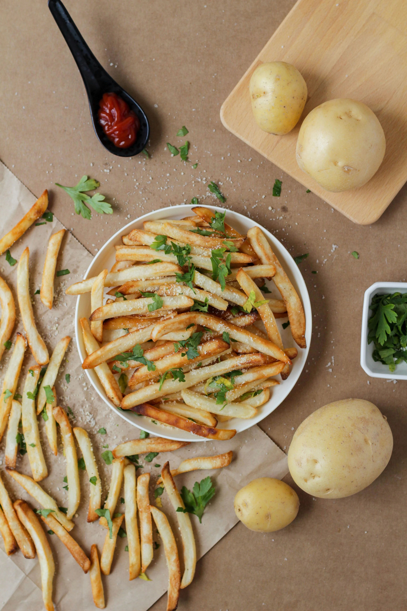

French Fries

Description
For crisp French fries, soak the potatoes in a sugar solution before frying. The sugar solution has something to do with the carbohydrates and prevents the potatoes from soaking up a lot of grease, so they get crunchy.
Ingredients
- 2 cup warmed water
- ⅓ cup white sugar
- 2 large russet potatoes, peeled, and sliced into 1/4 inch strips
- 6 cup vegetable oil for frying
- salt to taste
Directions
- Stir together warm water and sugar in a medium bowl. Soak potatoes in the sugar mixture for 15 minutes
- Remove potatoes from water and dry thoroughly on paper towels. Heat oil in a deep fryer to 375 degrees F (190 degrees C).
- Fry potatoes in hot oil until golden, 5 to 6 minutes. Drain on paper towels and season with salt.
- Enjoy!
HOME